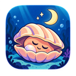
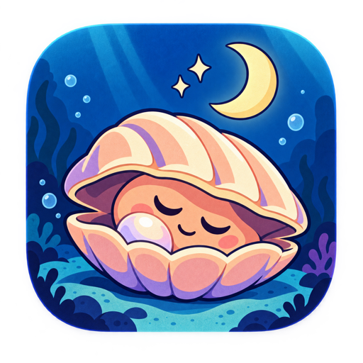
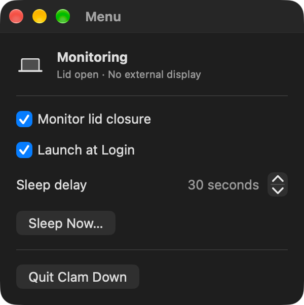
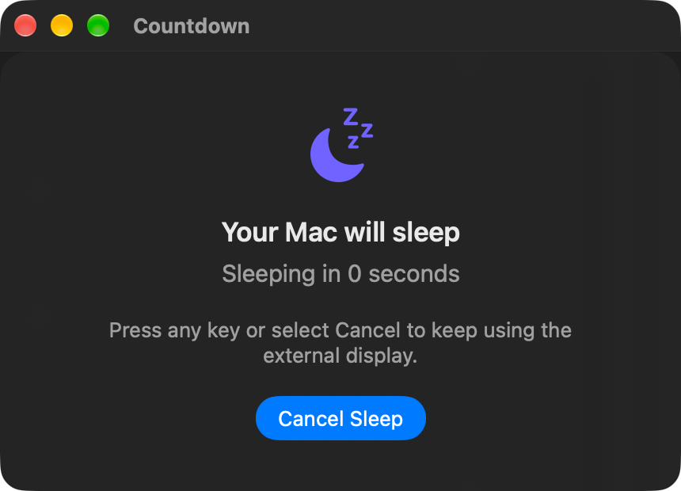

Automatic detection
Responds to lid closure when your MacBook is connected to an external display.

ClamDownA calmer close for your MacBook
ClamDown gives you a clear countdown before your Mac sleeps, so one key press can keep your external display session going.


ClamDown watches for a closed MacBook lid while an external display is connected, then puts the decision back in your hands.

Built for the menu bar
No sprawling preferences window. The controls you need stay close, and your choices are remembered between launches.
Responds to lid closure when your MacBook is connected to an external display.
Shows the countdown above full-screen apps and across macOS Spaces.
Choose a sleep delay from 5 to 120 seconds and test it with Sleep Now.
Press any key or select Cancel Sleep to keep using the external display.
Optionally start ClamDown when you log in, ready in the menu bar.
Turn monitoring off at any time; doing so also cancels an active countdown.
ClamDown is a menu bar app, so it stays out of the Dock and remains one click away.
Get started
On first launch, macOS may ask you to confirm that you want to open an app downloaded from the internet.
Requirements
Free and open source under the MIT License.